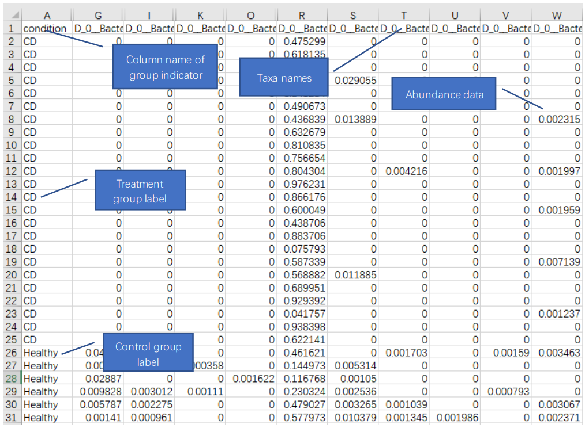
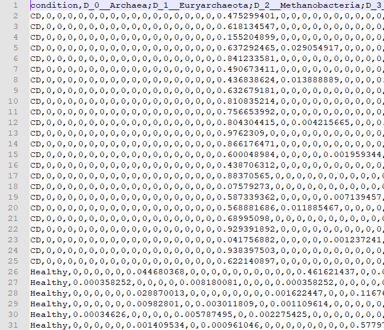
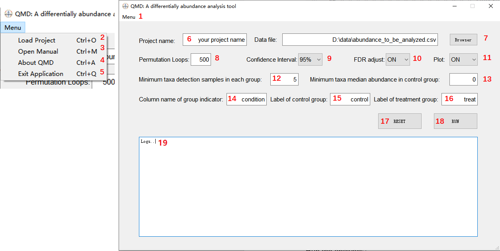
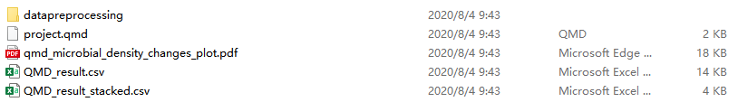
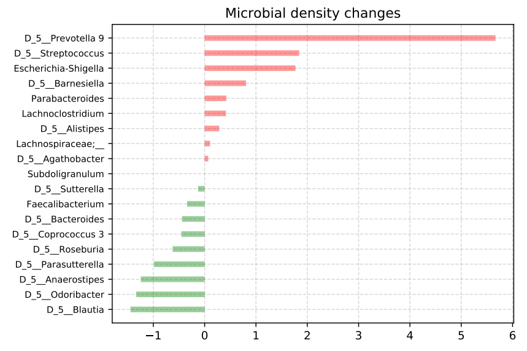
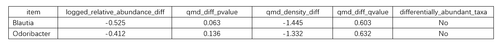

This manual provides guidance for differentially abundance analysis in the microbiome context by the QMD and QMDD. QMD makes quantification of microbial density changes between experimental groups. The Microbial Density refers to the microbial loads per unit sample mass (e.g. volume or weight).
One has conducted an experiment and measured the microbiome sequences. The microbial abundance table were derived from the sequence data. Hence one wants to determine which taxa’s density has changed between the experimental groups and how large the change is.
Both absolute abundance data and relative abundance data are accepted. Absolute abundances will be converted to relative abundances by the software before next step analysis.
Data should be in comma-separated values (CSV) format. Microsoft Office Excel, Apache OpenOffice spreadsheets, Mac Numbers or plain text editor can help to format the data file. Following is the data template.

The corresponding plain text is like fig2.

The datafile is composed with the group indicator column and taxa abundance data. The rows are samples and the columns are taxa. Do not include the sample id or other metadata in the data file. For taxa not detected in the sample, leave the corresponding cell in the data sheet blank or fill with 0 are both OK. The group labels in one group should be kept consistent. Be careful for the leading and trailing spaces in spreadsheet cells.
To make a qualified analysis, the sample size of each group should be at least 5. Uneven sample sizes are acceptable. The number of taxa should be at least 5.
Menu functions and setting tips are as follows, fig 3.

- Menu of QMD@XYL_Lab
- Load Project with shortcut Ctrl+O. A file explorer dialog box will pop up and one can select the previous analyzed project description file.
- Open Manual with shortcut Ctrl+M. This menu can open link to this guidance.
- About QMD with shortcut Ctrl+A. This menu can open link to the QMD description page.
- Exit Application with shortcut Ctrl+Q. This menu exit the app.
- Project name. Specify your project name.
- Browser the data file. A file explorer dialog box will pop up and one can select the csv file to be analyzed.
- Permutation loops. The software uses permutation test to make the quantification. Permutation loops affects the results’ stability. A larger permutation loop number also cost a longer time to conduct the analysis. It is suggested permutation loops is at least 500.
- Confidence Interval. The confidence interval for differentially abundant taxa identification. Three levels 99%, 95%,90% are provided.
- FDR adjustment. Benjamini/Hochberg FDR p value adjustment are provided in the software. One can choose turning it on or off. It is suggested if the sample size in each group are larger than 50, the FDR adjust is on.
- Plot. One can choose whether to plot the microbial density changes diverging bars chart.
- Minimum taxa detection samples in each group. If a taxa is only detected in a few samples less than the set value in either the control group or the treatment group, it will be filtered out. It is suggested the value is set larger than 3. If the group sample size is quite small, e.g. 5 or 6, this value can be set 2.
- Minimum taxa median abundance in control group. If the median relative abundance of taxa is less than the set value, the taxa will be filtered out. This is another way to control the prevalence of taxa. One can specify this value to 0 if one do not want to filter out low abundance taxa.
- Column name of group indicator. Specify the column name of group indicator. This should be consistent with the datafile. For the demonstration in fig1, it should be condition.
- Label of control group. Specify the control group label. For the demonstration in fig1, it should be Healthy.
- Label of treatment group. Specify the treatment group label. For the demonstration in fig1, it should be CD.
- Reset. Reset all input to default.
- Run. Run button to start the analysis.
- Logs. Log the analysis processes.
After clicking on the RUN button, the software will check the parameters. If there are improper parameters, the software will make a hint in logs and quit the analysis.
######################
######################
2020-08-04 20:30:36.315681
Setting:
Your project name: demo_project
Permutation Loops: 503
Confidence Interval : 95%
FDR adjustment : ON
Plot : ON
Minimum taxa detection samples in each group: 1
Minimum taxa median abundance in control group: 0
Column name of group indicator: condition
Label of control group: Healthy
Label of treatment group: CD
Data file: D:\project\exe\helloqt5\demo\dc_b2.csv
The minimum taxa detection num should be larger than 2. Quit the analysis.
After the check, the software conducts the analysis. Operation processes are logged. Following is an example of recorded logs.
######################
######################
2020-08-04 09:42:29.879258
Setting:
Your project name: demo_project
Permutation Loops: 503
Confidence Interval : 95%
FDR adjustment : ON
Plot : ON
Minimum taxa detection samples in each group: 2
Minimum taxa median abundance in control group: 0
Column name of group indicator: condition
Label of control group: Healthy
Label of treatment group: CD
Data file: D:\QMD\demo\dc_b2.csv
The data file contains 251 taxa
The Healthy group contains 6 samples
The CD group contains 24 samples
Project analysis result are stored in "D:\QMD\Project\demo_project"
Project data preprocessing result are stored in "D:\QMD\Project\aasd3\datapreprocessing"
######################
######################
2020-08-04 09:42:29.952063
Data preprocessing:
Data preprocessing success. 19 taxa into QMD analysis.
######################
######################
2020-08-04 09:42:34.889186
QMD analysis:
The quantified total microbial density changes between groups is -0.92.
The top positive changed taxa is D_0__Bacteria;D_1__Bacteroidetes;D_2__Bacteroidia;D_3__Bacteroidales;D_4__Prevotellaceae;D_5__Prevotella 9 with 5.667 density fold increases.
The top negative changed taxa is D_0__Bacteria;D_1__Firmicutes;D_2__Clostridia;D_3__Clostridiales;D_4__Lachnospiraceae;D_5__Blautia with -1.445 density fold decreases.
The analysis result can be found in "D:\QMD\Project\demo_project"
######################
######################
2020-08-04 09:42:37.835659
QMD analysis done.
The logs are composed of three parts. The settings part records user’s configuration. The preprocessing part records the number of taxa remained after the prevalence filter. The analysis part reports the total microbial density changes between groups. The top positive and top negative taxa are also reported.
One can load previous finished projects to review the parameters and logs. From Menu->Load Project, a file dialog will pop out. Choose the project.qmd, the analysis records will be restored in the main window of the software.
The software will create project folder in its file path and the analysis result will be stored in the project/your_project_name folder. The results folder contains following files.

- The datapreprocessing folder. It contains files generated by data preprocessing
- The project.qmd. It records project configurations and operation logs.
- The qmd_microbial_density_changes_plot.pdf, the generated diverging bars chart when plot is on. Fig 5 gives a demonstration.

- The QMD_result_stacked.csv. This file contains a table list the relative abundance changes (in the column logged_relative_abundance_diff), the p value of QMDD(in the column qmd_diff_pvalue), the q value(FDR adjusted pvalue) of QMDD(in the column qmd_diff_qvalue), the identified differentially abundant taxa(in the column differentially_abundant_taxa) between group for every taxa. The taxa with YES in the differentially_abundant_taxa column are identified as statistically significant changed taxa. If FDR adjust is off, q value will be not provided. A demo table is given in fig 6.

- The QMD_result.csv, unstacked version of QMD_result_stacked.csv. The quantified are also recorded in this file.